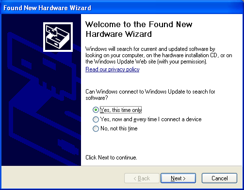
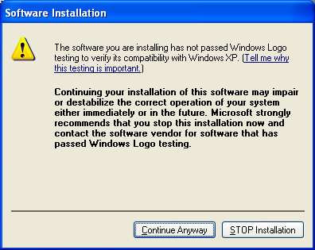
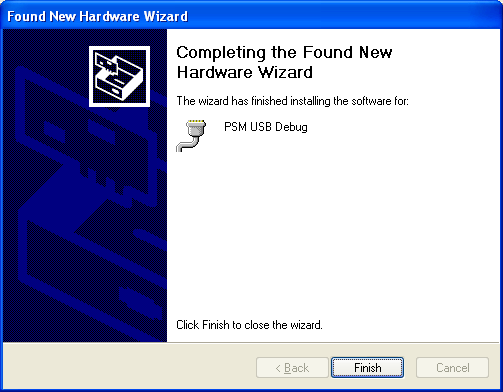
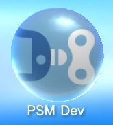
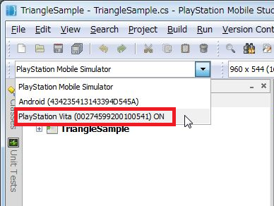

この文書ではPlayStation(R)VitaでPSMアプリケーションを実行するための手順を説明します。
なお、PlayStation(R)Vitaで実行するためにはメモリーカード、及び無線(WiFi/3G)でネットワークに接続できる環境が必要となります。
Contents
開発用PCのOSがWindows XPの場合、PlayStation(R)Vitaを開発用PCにUSBケーブルで接続した時に、再度USBドライバのインストールを促される場合があります。
その場合、Windows上に表示されるダイアログに従い、USBドライバを開発用PCにインストールして下さい。
なお、OSがWindows 7の場合、この設定は必要ありません。
Windows XPへUSBドライバをインストールする手順
- 開発用PCとPlayStation(R)VitaをUSBケーブルで接続します。
接続すると以下のダイアログが表示されるので、"Yes, this time only"を選択し、"Next >"ボタンをクリックして下さい。

- "Install the software automatically (Recommended)"を選択し、"Next >"ボタンをクリックして下さい。

- ボタンを押すとインストールが始まります。

このとき、開発用PCの設定によっては以下のようなダイアログが表示される場合がありますが、これは Windows ロゴテストを取得していないソフトウェアについて必ず表示されるメッセージとなります。
上記手順でインストールを行なっている場合には弊社で動作確認を行なっておりますので、そのまま "Continue Anyway" を選択しインストールを続けてください。

- USBドライバのインストールが完了すると以下のダイアログが表示されます。
"Finish"ボタンをクリックしてインストールを完了してください。

次にPlayStation(R)Mobile Development AssistantをPS Vitaにダウンロードします。
Development AssistantはPS Vita上でPSMアプリの開発をおこなうために使用するアプリケーションです。
以下の手順でダウンロードをおこなってください。なおダウンロード済みの場合、LiveArea(TM)に表示されるオレンジ色の[アップデート]アイコンで更新を行ってください。
PlayStation(R)Vitaにメモリーカードを入れておきます。
PS Vita本体に登録してあるPlayStation(R)Network(Sony Entertainment Network)アカウントで、DevPortalにてデベロッパ登録をおこないます。
デベロッパ登録が完了するとPlayStation(R)StoreでDevelopment Assistantのダウンロードが可能になります。PS Vitaのホーム画面からPlayStation(R)Storeアプリを起動してください。
右下のボタンをタップして現れるメニューからダウンロードリストを選択します。
上部のタブから[ゲーム]を選択します。
[PlayStation(R)Mobile Development Assistant]を探して、その右側にある[ダウンロード]をタップして、ダウンロード&インストールします。
ダウンロード&インストールに成功すると、PS Vitaのホーム画面に以下のアイコンが現れます。

- 開発用PCとPlayStation(R)Vitaを付属のUSBケーブルで接続します。
- PS Vitaのホーム画面で、[Settings]アイコンをタップし、[Date & Time] - [Date & Time Settings] - [Set via Internet]を選択し、でネットワークから自動で時刻を所得するようにしておきます。
- PS Vitaで時刻の取得が完了したら、開発用PCの時刻をPS Vitaの時刻に合わせておきます。
PSMアプリを実機で実行するためにはアプリ鍵を作成する必要があります。以下ではアプリ鍵の作成手順を説明します。
- 実機でPSMアプリを実行するための準備 で準備を済ましておいてください。
- PSM Studioで実行させたいPSMアプリのソリューションファイルを開きます。
- PlayStation(R)Vitaホーム画面上の「PSM Dev」アイコンをタップしてDevAssistant を起動します。
- PCに接続されているデバイスがドロップダウンリストに表示されるので、対象の PS Vita ( xxxxxx ) を選択します。
図1 Vitaの選択
※ ( xxxxxx )にはPlayStation(R)VitaのID番号が表示されます。IDはPlayStaion(R)Vitaごとに異なります。
※ ドロップダウンリストにOFFと表示されている場合、DevAssistantが起動していないことを表しています。 PlayStation(R)Vitaホーム画面上の「PSM Dev」アイコンをタップしてDevAssistant を起動してください。
- メニューの [Key] - [Update Device Seed and App Key] を選択を選択し、デバイスシードとアプリ鍵を作成します。

図2 デバイスシードとアプリ鍵の更新
- ダイアログが表示されるので、指示に従って入力を行ってください。初回はパブリッシャ鍵の作成を求められますので、作成してください。
- アプリ鍵の作成に成功したら準備は完了です。
鍵を作成後、メニューの[Build] - [Rebuild All]でプロジェクトをリビルドします。
Vitaを無線でネットワークに接続できる状態にしておきます。PSMアプリ起動時に弊社のサーバーに接続して認証が行われます。
※ PlayStation(R)Vitaでは、認証が成功すると、以降24時間は認証処理は省略されます。
メニューの [Run] - [Debug] を選択、もしくは F5キーを押すと開発用PCからPlayStation(R)Vitaのメモリーカードに関連ファイルが転送され、アプリケーションが起動します。
- 鍵についての詳しい情報は 鍵管理 を参照してください。
- PlayStation(R)Mobile Development Assistant については、 PlayStation(R)Mobile Development Assistant について を参照してください。